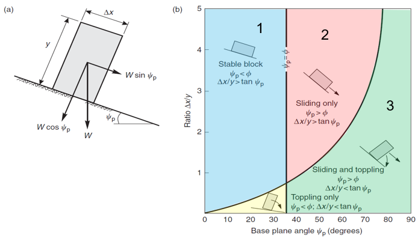
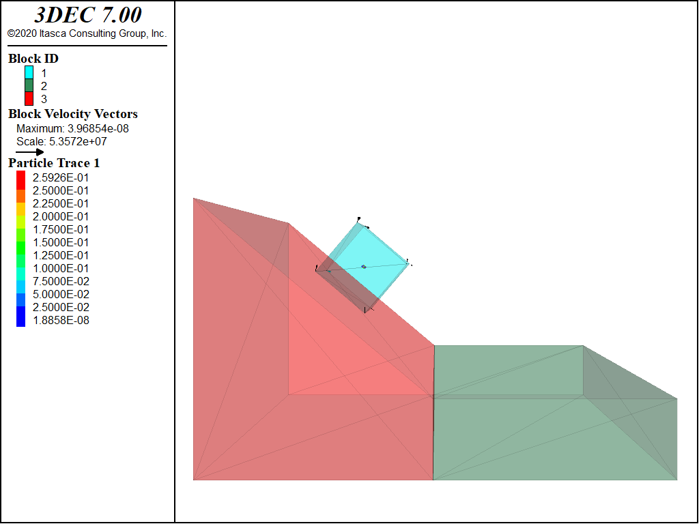
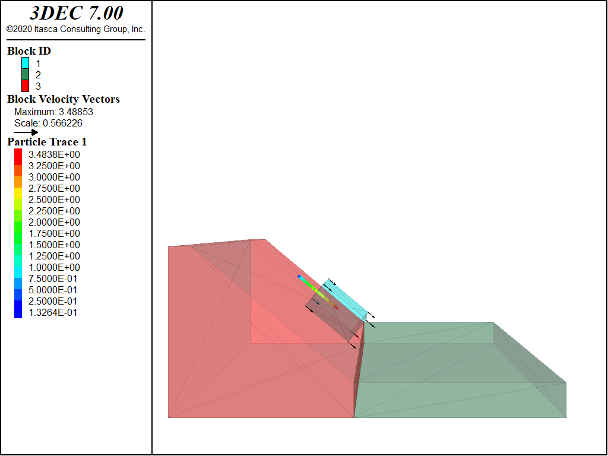
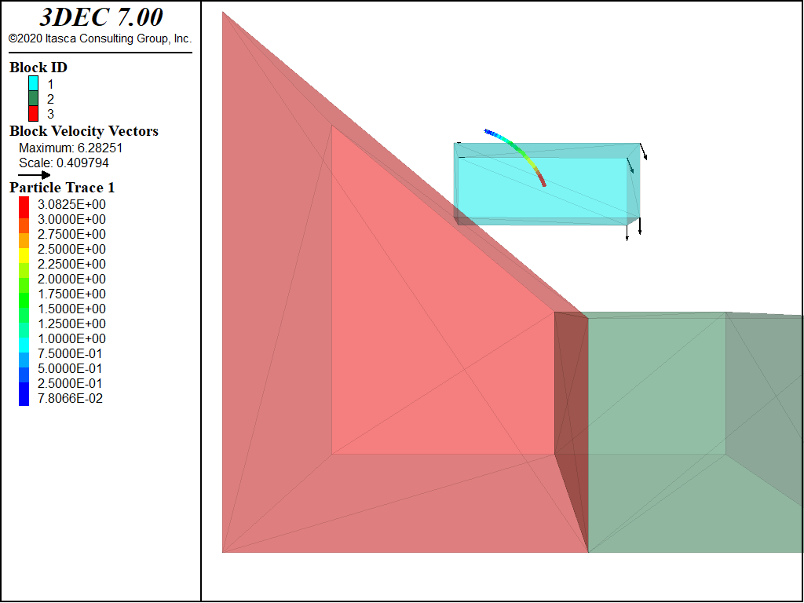
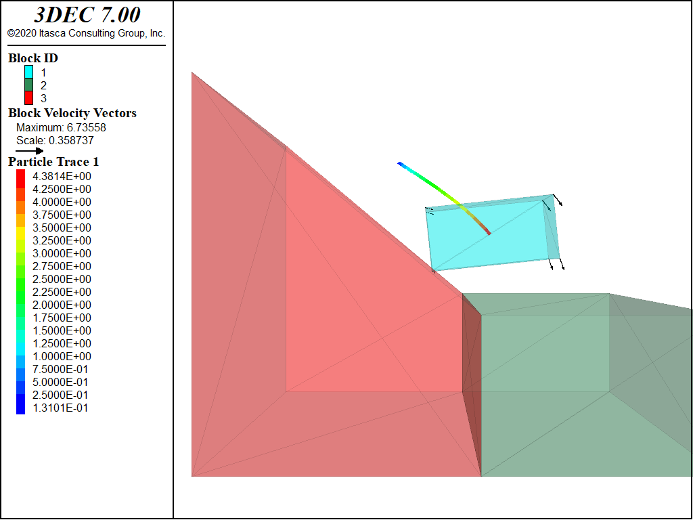

滑动与倾倒块体
问题描述
注意
要在 3DEC 中查看此项目，请使用菜单命令 。选择“3DEC/ VerificationProblems/ Sliding_Block”，然后选择“Sliding_Block.prj”进行加载。所用的主数据文件（main data files）显示在本示例的末尾。所有数据文件都可在该项目中找到。
分析边坡上不同尺寸和属性的单个块体的稳定性，并与解析解进行对比。
解析解
Wyllie 和 Mah（2004）给出了不同几何和摩擦角下边坡上块体的稳定性。这在图 1（Figure 1）中作了总结，
其中：
\(\phi\) = 内摩擦角；
\(\psi_p\) = 边坡角。


图 1：滑动块体与倾倒块体的识别：（a）倾斜平面上块体的几何；（b）倾斜平面上块体滑动与倾倒的条件。引自 Wyllie 和 Mah（2004）。
3DEC 模型
运行四个不同的 3DEC 模型以检验不同的稳定状态。所有模型具有以下属性：
密度：\(\rho\) = 2000 kg/m3
节理剪切与法向刚度：\(K_n\) = \(K_s\) = 10 MPa/m
重力加速度：\(g\) = 10 m/sec2
块体宽度：\(\Delta x\) = 10 m
每个试验中改变块体高度、节理内摩擦角和边坡角。
稳定
对于稳定工况，使用以下参数：
块体高度：\(y\) = 10 m
内摩擦角：\(\phi\) = 40.1 度
边坡角：\(\psi_p\) = 40 度
700 步后块体的位移如图 1（Figure 1）所示。正如预期，块体没有移动。


图 2：稳定模型中块体几何与位移。
滑动
为检验滑动条件，使用了以下参数：
块体高度：\(y\) = 5 m
内摩擦角：\(\phi\) = 20 度
边坡角：\(\psi_p\) = 40 度
图 2（Figure 2）显示了 500 步后的情况。块体箭头表示网格点速度，表明块体仍在沿坡面向下运动。彩色线条表示块体形心的运动轨迹，由蓝色（早期）到红色（后期）。正如预期，块体沿坡面下滑。


图 3：滑动模型中块体几何、位移及块体运动轨迹。
倾倒
倾倒工况采用以下参数模拟：
块体高度：\(y\) = 25 m
内摩擦角：\(\phi\) = 40 度
边坡角：\(\psi_p\) = 40 度
结果如图 3（Figure 3）所示。与图 2（Figure 2）一样，块体箭头表示速度，彩色线条表示块体形心的轨迹。此情况下显然块体正在倾倒。


图 4：倾倒模型中块体几何、位移及块体运动轨迹。
倾倒与滑动
最后一项试验是模拟倾倒与滑动的组合工况。使用以下参数：
块体高度：\(y\) = 20 m
内摩擦角：\(\phi\) = 30 度
边坡角：\(\psi_p\) = 40 度
图 4（Figure 4）显示了结果。与图 2（Figure 2）和图 3（Figure 3）相比可以看出，块体确实发生了滑动和倾倒。


图 5：滑动并倾倒模型中块体几何、位移及块体运动轨迹。
参考文献
Wyllie, D. C., C.W. Mah. “Rock Slope Engineering”, 4th edition, Spon Press (2004).
数据文件
stable.dat
;稳定
model new
program call 'build_blocks.dat'
[factor = 1] ; 宽高比
[fi_p = 40] ; 坡角
[make_blocks]
[fi = 40.1] ; 摩擦角
; 参数采用 MPa 单位
block property density 2e-3
block contact material-table default property stiffness-normal 10 ...
stiffness-shear 10 friction [fi]
model gravity 0 0 -10
model large-strain on
; 记录顶部某点的位移时程
block history displacement position [f1_x2] [f1_y] [f1_z2]
; 跟踪块体形心
block trace id 1
model cycle 700
model save 'stable'
sliding.dat
;滑动
model new
program call 'build_blocks.dat'
[factor = 2] ; 宽高比
[fi_p = 40] ; 坡角
[make_blocks]
[fi = 20] ; 摩擦角
; 参数采用 MPa 单位
block property density 2e-3
block contact material-table default property stiffness-normal 10 ...
stiffness-shear 10 friction [fi]
model gravity 0 0 -10
model large-strain on
; 记录顶部某点的位移时程
block history displacement position [f1_x2] [f1_y] [f1_z2]
; 跟踪块体形心
block trace id 1
model cycle 500
model save 'sliding'
toppling.dat
;倾倒
model new
program call 'build_blocks.dat'
[factor = 0.4] ; 宽高比
[fi_p = 40] ; 坡角
[make_blocks]
[fi = 50] ; 摩擦角
; 参数采用 MPa 单位
block property density 2e-3
block contact material-table default property stiffness-normal 10 ...
stiffness-shear 10 friction [fi]
model gravity 0 0 -10
model large-strain on
; 记录顶部某点的位移时程
block history displacement position [f1_x2] [f1_y] [f1_z2]
; 跟踪块体形心
block trace id 1
model cycle 800
model save 'toppling'
sliding_toppling.dat
;滑动与倾倒
model new
program call 'build_blocks.dat'
[factor = 0.5] ; 宽高比
[fi_p = 40] ; 坡角
[make_blocks]
[fi = 30] ; 摩擦角
; 参数采用 MPa 单位
block property density 2e-3
block contact material-table default property stiffness-normal 10 ...
stiffness-shear 10 friction [fi]
model gravity 0 0 -10
model large-strain on
; 记录顶部某点的位移时程
block history displacement position [f1_x2] [f1_y] [f1_z2]
; 跟踪块体形心
block trace id 1
model cycle 700
model save 'sliding_toppling'
build_blocks.dat
; 用于建立边坡和下落块体的函数
fish auto-create off
fish define make_blocks
;=============================
global deltax = 10.0 ; 块体宽度
global factor ; 高宽比
global fi_p ; 节理倾角
;==============================
global z_=deltax/factor ;边坡高度
global alfa_deg=(90-fi_p)
; 角度采用弧度
local alfa_rad=(90-fi_p)*math.degrad
local fi_p_rad = fi_p*math.degrad
; 边坡块体坐标
global xlow=0
global xup=3*deltax*math.cos(fi_p_rad)+z_*math.cos(alfa_rad)
global ylow=0
global yup=5*deltax
global zlow=0
global zup=z_ + 2*deltax*math.sin(fi_p_rad) + z_*math.sin(alfa_rad)+0.5*z_
global xupp=xup+3*deltax
; 下落块体坐标
local height = z_
local bot_cenx = 0.5*(xlow+xup)
local bot_cenz = z_+(xup-bot_cenx)*math.tan(fi_p_rad)
global f1_x1 = bot_cenx - 0.5*deltax*math.cos(fi_p_rad)
global f1_z1 = bot_cenz + 0.5*deltax*math.sin(fi_p_rad)
global f1_x4 = bot_cenx + 0.5*deltax*math.cos(fi_p_rad)
global f1_z4 = bot_cenz - 0.5*deltax*math.sin(fi_p_rad)
global f1_x2 = f1_x1 + height*math.sin(fi_p_rad)
global f1_z2 = f1_z1 + height*math.cos(fi_p_rad)
global f1_x3 = f1_x4 + height*math.sin(fi_p_rad)
global f1_z3 = f1_z4 + height*math.cos(fi_p_rad)
global f1_y = 0.5*(ylow+yup) - 0.5*deltax
global f2_y = f1_y + deltax
command
; 创建长方体
block create brick [xlow] [xup] [ylow] [yup] [zlow] [zup]
block create brick [xup] [xupp] [ylow] [yup] [zlow] [z_] group '40'
block hide range group '40'
; 切割边坡
block cut joint-set dip [fi_p] d-d 90 ori [xup] [ylow] [z_] jointset-id 1
block delete range plane dip [fi_p] d-d 90 ori [xup] [ylow] [z_] above
block hide off
block fix
; 创建下落块体
block create prism face-1 [f1_x1],[f1_y],[f1_z1] ...
[f1_x2],[f1_y],[f1_z2] ...
[f1_x3],[f1_y],[f1_z3] ...
[f1_x4],[f1_y],[f1_z4] ...
face-2 [f1_x1],[f2_y],[f1_z1] ...
[f1_x2],[f2_y],[f1_z2] ...
[f1_x3],[f2_y],[f1_z3] ...
[f1_x4],[f2_y],[f1_z4]
end_command
end
fish auto-create on
| 这些内容对您有帮助吗？… 版权与免责声明 | FLAC3D © 2019, Itasca | 原文更新于 2020 年 10 月 8 日 |